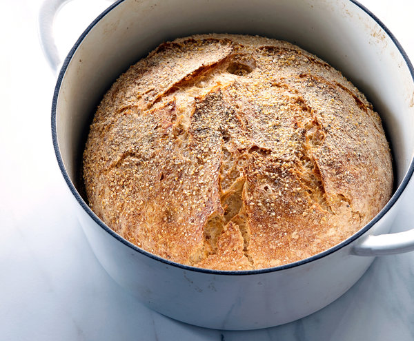

Bread

A beautiful rustic loaf made easily in your home oven.
This no knead recipe only takes minutes to get a dough started. Let time and fermentatioh do the rest of the work.
Ingredients
- 3 1/2 cups flour
- 1/4 tsp instant yeast
- 2 tsp salt
- 1 1/2 cup water
Recipe
- Mix dry goods together in a large bowl, add warm water, and mix
- Cover bowl and let dough sit in warm area for 12-18 hours
- Fold dough inwards from four different sides, then recover, and let sit for 15 minutes
- Shape dough into a ball, cover and let sit for two hours
- Preheat oven to 450F and leave dutch oven inside to heat up for 30 minutes
- Bake bread for 30 minutes covered, 15 minutes uncovered